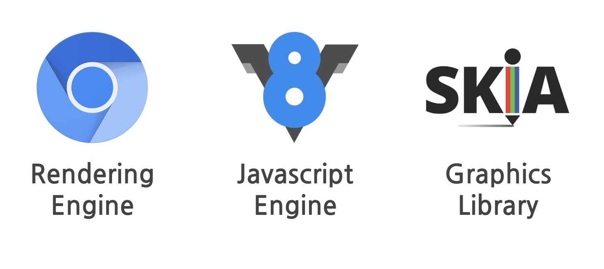
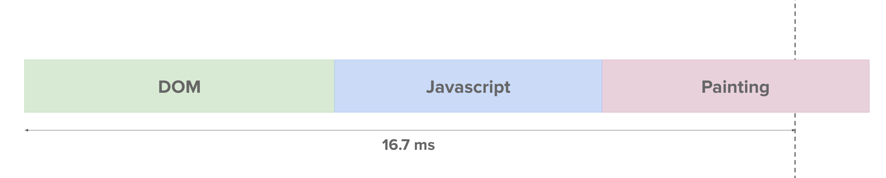
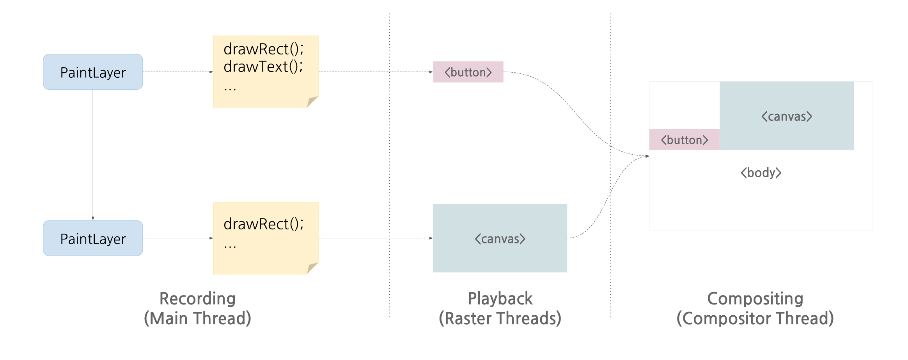
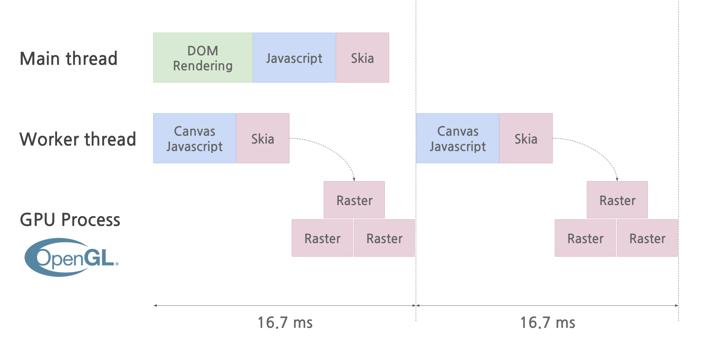

TRACK 2 : DEVIEW 2018 책에서는 맛볼 수 없는 HTML5 Canvas 이야기 (부제: Web Worker를 이용해 캔버스 성능을 극대화하기)
DEVIEW 2018 참석 후 관심있게 들었던 섹션을 정리하였습니다.
- 브라우저 렌더링
- 캔버스는 렌더링
- 캔버스 애니메이션 문제점
- 문제점 개선 방법
- 새로운 API
브라우저 렌더링

브라우저는 크게 Rendering Engine, Javascript Engine, Graphics Library 3가지 요소로 렌더링이 처리됩니다. 대략적인 흐름은 아래와 같습니다.(브라우저 렌더링 플로우 자체는 디테일하게 다루지 않습니다. 브라우저는 어떻게 화면을 그릴까? 포스팅을 참고해 주세요.)
- Rendering Engine이 렌더링을 처리합니다.
(Rendering Engine은 Javascript 를 해석할 수 없습니다.) - Javascript 를 만나면 V8 에 해석 요청을 합니다.
- 이후 Graphics Library를 통해 화면을 그립니다.
캔버스 렌더링
위 흐름을 보면 Canvas 에 무언가를 효율적으로 그리기 위해서는 HTML, CSS 보다는 Javascript 라는 것을 짐작할 수 있습니다. 실제로 캔버스 내부는 Javascript 코드로 그려지기 때문에 캔버스 렌더링은 브라우저 Rendering Engine 아닌 Javascript Engine에 의해 결정됩니다.
캔버스 애니메이션 문제점
다이나믹한 그래픽 처리를 위해 Canvas 가 나타났습니다. 애니메이션을 잘 처리하기 위한 목적으로 나온 태그이지만 현실은 다이나믹한 그래픽 처리에 어려움이 있습니다.

위 그림을 보면 렌더링 엔진, 자바스크립트 엔진, 그래픽스 라이브러리가 16.7ms를 넘어 처리되고 있습니다. 실제로 16.7ms 내에서 캔버스 코드가 실행되고 그림을 그려야 1프레임을 제대로 그릴 수 있지만 위 그림에서는 초과하여 실제로 프레임 드랍이 발생합니다.
프레임 드랍이 발생하지 않게 하기 위해서는 Main Thread 에서 16.7ms 안에
dom, javascript, painting 을 처리하고 남는 시간에 캔버스 렌더링을 시도해야 합니다. 하지만 Main Thread 는 위 그림처럼 이미 많은 일을 하고 있는 경우가 많습니다.
문제점 개선 방법
브라우저 관점에서 개선
Main Thread 에서 하던 일을 분담하는 방식입니다.

- Main Thread 에서는 Recording 까지만 처합니다. (그림 그리는 방법 정의합니다.)
- Raster Thread 에서 생성된 Canvas layer를 bitmap 화 합니다. (전달 받은 방법에 따라 그림을 그림립니다.)
- Compositor Thread 에서 bitmap 들을 합쳐 하나의 큰 그림을 그리게 합니다. (그려진 그림들을 조합 합니다.)
웹 개발자 관점에서 개선
풀 스크린으로 캔버스 렌더링하기
UI에 제약이 생기지만 Canvas를 풀 스크린으로 렌더링하면 핸들링할 Target DOM 이 없기 때문에 Main Thread 자원을 더 사용할 수 있으며 GPU 가속까지 붙이면 성능을 개선할 수 있습니다. 애니메이션을 전체 화면에서 처리할 경우는 고려해볼 수 있는 선택지 입니다.
Background Canvas
프리젠테이션용, 백그라운드용 캔버스를 두개 만듭니다. 백그라운드에서 여러 오브젝트를 다 그린다음 프레젠테이션 캔버스에 백그라운드 캔버스에서 그린 오브젝트를 가져와 한번에 한번에 엎어치기 하는 방식입니다.
Background Canvas
1 | backContext.drawRect(); |
Presentation Canvas
1 | frontContext.drawImage(backCanvas); |
새로운 캔버스 API
위와 같은 꼼수 없이 캔버스를 잘 그리기 위한 새로운 API 가 고안되었습니다.
등장 배경
- Javascript Engine과 Rendering Engine 사이의 Binding Overhead 발생
- GPU 가속을 사용하더라도 Skia 내부의 Overhead 발생
- GPU가속 쓰더라도 CPU를 써야하는 부분에서 페인팅 라이브러리 overhead 발생
- 위 프로세스 처리 후 DOM Rendering 을 처리하기에도 벅찬 Main-Thread
요구 사항
- Javascript 부하를 줄이기 위해 다른 Thread 에서 실행할 수 있으면 좋겠다.
- 크진 않지만 Skia 의 부하를 줄이기 위해 다른 Thread 에서 실행하면 좋겠다.
- DOM Rendering 과 분리되면 좋겠다.
시도
- 이미 사용되고 있는 webWorker를 통하여 새로운 스레드 생성하여 처리 시도
이슈
- webWorker 에서는 직접적으로 DOM 에 엑세스가 불가능 합니다.
- 캔버스가 HTML(DOM) 이기에 메인 스레드에서 분리가 불가능 합니다.
- (HTML 은 JS, CSS 등 다른 자원에서 DOM Tree 접근시 싱크가 맞아야 하는데 다른 스레드에서 처리하게 되면 싱크 이슈가 발생합니다.)
- React, Vue 와 같이 Shadow DOM 을 사용하게 되면 Atomic 하게 처리할 수 있습니다.
해결
- Canvas를 DOM 에서 분리하는 새로운 offscreen canvas API 등장
- Offscreen Canvas API
- 기존의 Canvas Rendering Logic은 고치지 않고 Thread만 옮겨가서 그대로 수행할 수 있습니다.
- Mozila와 크롬 69에 적용되어 있습니다.
Todo For Main Thread
1 | const canvas = document.getElementById(‘canvas’); |
Todo For Worker Thread
아래와 같이 워커 스레드에서 렌더링처리하면 메인 스레드의 스택과는 무관하게 렌더링 처리가 가능합니다.
1 | self.onmessage = event => { |
기존 방식의 Canvas 사용

Offscreen Canvas 사용

정리
Offscreen Canvas 를 이용하면 Canvas 에 그림을 그리기 위한 로직을 Main Thread 에서 분리하여 처리할 수 있고 이를 통해 캔버스의 성능을 향상 시킬 수 있습니다.